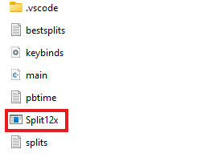
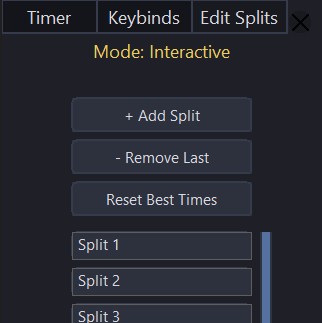
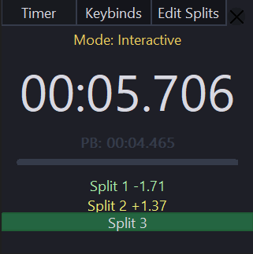

A simple and elegant split timer for speedrunners and focused tasks.
DownloadLoading download count...
Includes executable and configuration files. Windows only.

A simple and elegant split timer for speedrunners and focused tasks.
DownloadLoading download count...
Includes executable and configuration files. Windows only.

Click the download button above, unzip the file, and open the Split12x.exe.
Click the “Edit Splits” tab and enter the names of your segments for tracking.


Use the “Keybinds” tab to set your start, split, and reset keys. Begin your run! Default keybind to toggle interactive mode is "T".